Back | ||
1965-1966 Page 1 | ||
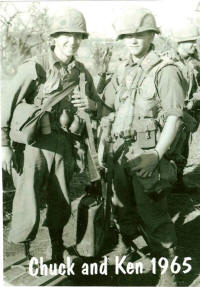 | 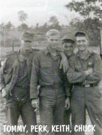 | 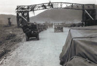 |
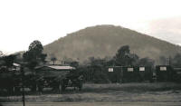 | 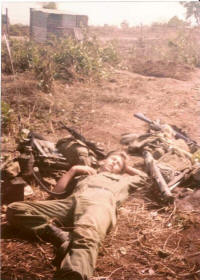 | 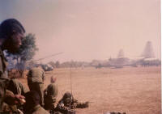 |
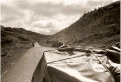 Mang Yang Pass on Highway 19 heading to Pleiku from An Khe | 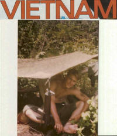 Out of the sun and drying my feet Chuck Kline | 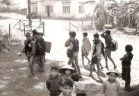 1966 Pleiku The Montagnard Tribe |
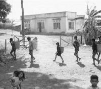 1966 Pleiku The Montagnard Tribe | 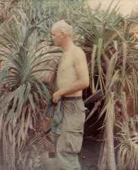 Wildcat 1966 Jim Taylor | 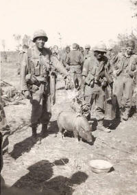 Fresh Food |